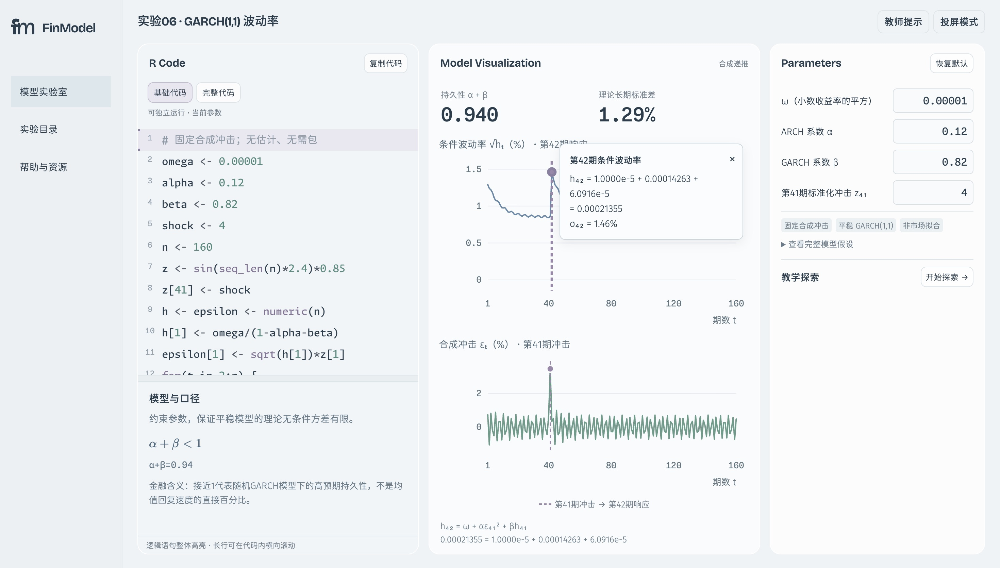
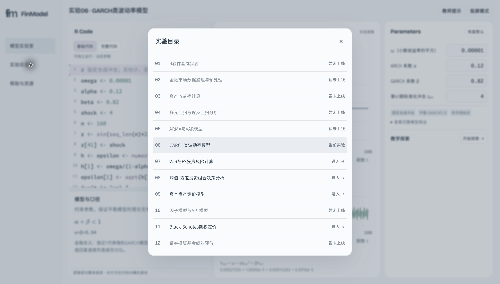
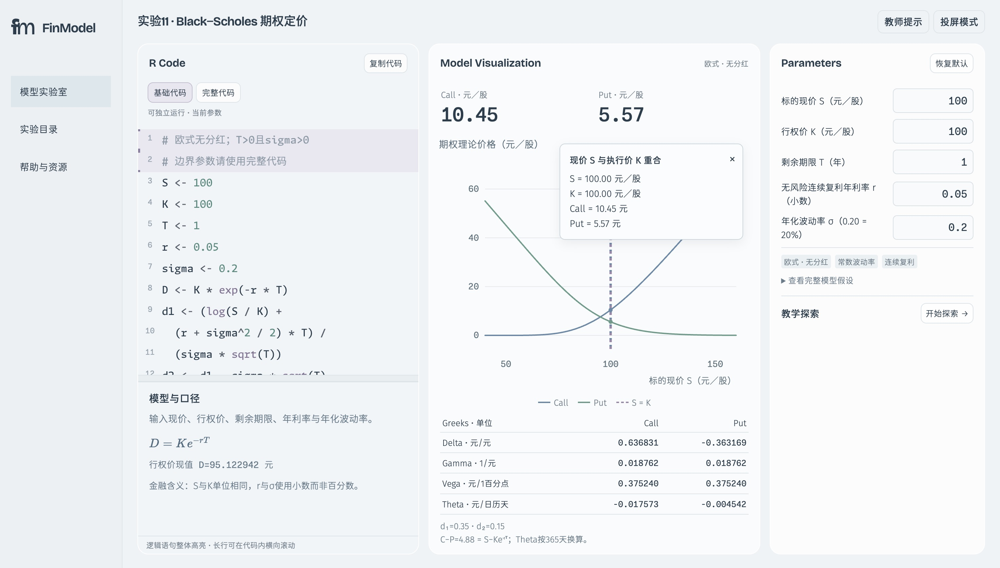

普通缓存开启
garch：目录／悬停／移开后
var：目录／悬停／移开后

portfolio：目录／悬停／移开后


2026-10-19 · 1.9.1-audit.829515775e3098be · Chrome 155.0.8059.84
新增双缓存 2050 项通过；既有交互 355 项通过；9套数学/教学回归通过。Safari未开启远程自动化，完整矩阵未测。以下为真实截图，无录屏。
完整根因及修改报告 · 2050项断言／网络／DOM凭据 · 实际服务身份 · 数学回归 · Safari阻塞原文
旧目录的七项顺序见 原Chrome目录文本；第一张图记录驻留Tooltip，不能当作旧目录截图。


